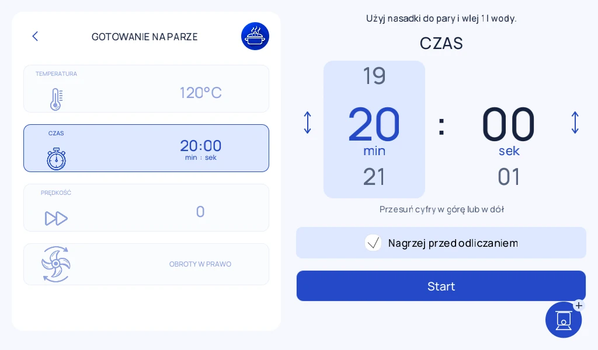
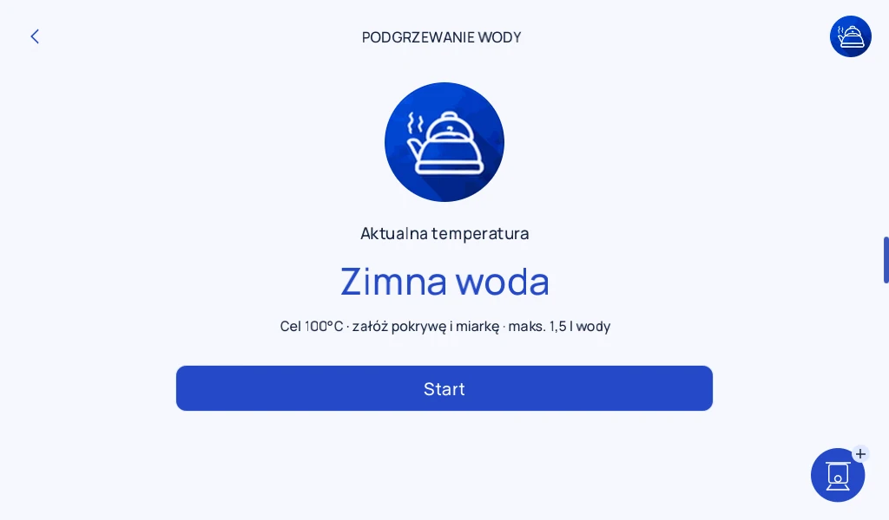
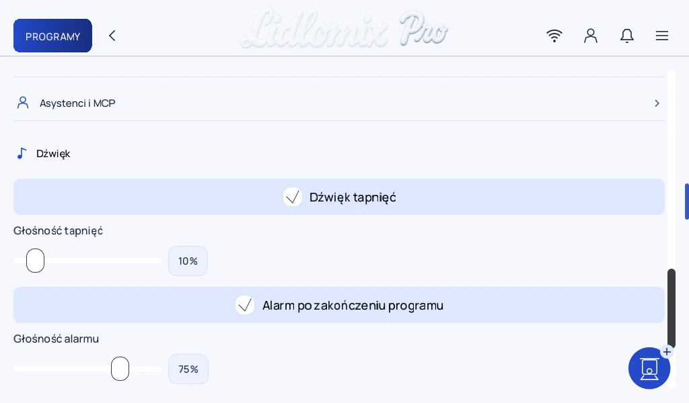
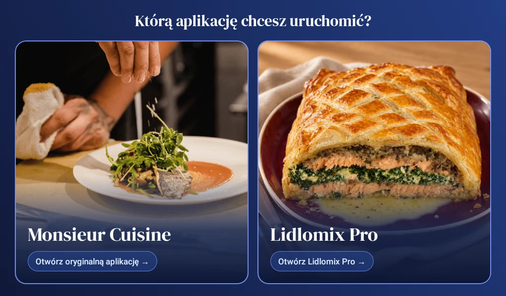

Monsieur Cuisine Connect ·
Lidlomix Pro 00.17.8. Programy, ekran i dźwięk
Po wydaniu 0.16.4 poprawiłem obsługę programów na ekranie Connecta. Start widać podczas ustawiania czasu, w trakcie pracy można zrobić pauzę, a głośność kliknięć i sygnału końca programu można odsłuchać bezpośrednio w ustawieniach. Poniżej pokazuję, jak ekrany zmieniły się na robocie.
Start widoczny podczas ustawiania czasu
W 0.16.4 komunikat o nastawach potrafił zejść pod przyciski. Przeniosłem wskazówki wyżej, a przy kolumnach minut i sekund dodałem pionowe strzałki. W edytorach temperatury i prędkości pozioma strzałka pokazuje kierunek przesuwania. Aktualny czas pozostaje w lewym polu programu.


W programach obsługujących pauzę po naciśnięciu Start pojawia się Pauza, a pod nią Stop. Po pauzie można wznowić cykl od miejsca zatrzymania. Pasek akcji jest wyrównany do ostatniego pola po lewej. Przy ograniczonej wysokości pierwszeństwo ma dostęp do przycisków. W Gotowaniu na parze przełącznik Nagrzej przed odliczaniem znajduje się bezpośrednio nad Startem.

Ugniatanie, Przypiekanie, Mycie i podgrzewanie wody
- Ugniatanie zaczyna z nastawą 2:00 zamiast 0:45.
- Przypiekanie domyślnie wybiera 130°C. Powyżej 100°C można ustawić do 14 minut, a przy 100°C lub mniej do 30 minut. Zmiana temperatury zachowuje interwały tego programu, czyli 5 sekund pracy ostrza i 30 sekund przerwy na testowanym Connect.
- Mycie pojemnika ma trzeci tryb, Gruntowne czyszczenie. Pierwszy etap trwa 40 minut przy 60°C i prędkości 2 w prawo. Następnie ekran prosi o wymianę wody i potwierdzenie krótkiego cyklu płukania.
- Podgrzewanie wody znów pokazuje ikonę czajnika i aktualny odczyt temperatury. Przy odczycie poniżej zakresu pomiaru ekran wyświetla „Zimna woda”.



Turbo, Waga i czytelniejsze ikony
Turbo ma większą ikonę, jeden środkowy przycisk i wskazówki pod nim. Przytrzymanie fizycznej gałki uruchamia Turbo tylko na aktywnym ekranie Turbo. Puszczenie gałki zatrzymuje silnik. Ze skrótu nadal można wrócić do bieżącego programu albo przepisu.


Temperatura, czas, prędkość i kierunek obrotów mają wspólną oś wartości. Po lewej podpisy i ikony są wyrównane względem siebie. Teksty interfejsu używają kroju Manrope z polskimi znakami. Ikony przy nazwach programów wzrosły z 32 do 48 pikseli, a pływający przycisk narzędzi o 30%. Na ekranie Wagi pozostała jedna duża ikona i czytelniejszy komunikat o odczycie.


Kliknięcia i sygnał końca programu
W Ustawieniach → Dźwięk można osobno włączyć tapnięcia i alarm, a także ustawić ich głośność od 0 do 100%. Po puszczeniu suwaka słychać próbkę z wybraną głośnością. Kolejny odsłuch alarmu zastępuje poprzedni. Domyślne wartości w 00.17.8 to 10% dla tapnięć i 80% dla alarmu. Alarm odtwarza się raz po naturalnym zakończeniu programu.



Powrót do wyboru aplikacji po starcie robota
Moduł Connect 0.9 przywraca szybki start usługi nawigacji po włączeniu robota i po aktualizacji modułu. Po restarcie Android odkładał start nawigacji, gdy w kolejce wciąż czekał Firefox. Na urządzeniu sprawdziłem po restarcie obie ścieżki. Przeciągnięcie uchwytu od prawej krawędzi w lewo wraca do ekranu wyboru zarówno z Lidlomix Pro, jak i z fabrycznej aplikacji Monsieur Cuisine.

Lista zmian od 0.16.4
- 0.16.4 — pełne ekrany Wagi, Turbo i Mycia ze skrótów oraz powrót do bieżącego programu lub kroku przepisu. Poprzedni wpis ze zrzutami.
- 0.16.5 — dodanie Gruntownego czyszczenia z płukaniem po potwierdzeniu oraz przywrócenie ekranu podgrzewania wody.
- 0.16.6 — korekty układu trybów Mycia i Gotowania ryżu oraz komunikat „Zimna woda”.
- 0.16.7 — Start, Pauza, Wznów i Stop w programach z obsługą pauzy, 2 minuty w Ugniataniu i dłuższy czas Przypiekania po obniżeniu temperatury.
- 0.16.8 — widoczny Start podczas edycji, komunikaty nad edytorem, nagrzewanie obok Startu i obsługa przytrzymania gałki na ekranie Turbo.
- 0.16.9 — szerszy Start w paskach programów, większa ikona kierunku obrotów i przeniesienie obsługi Turbo niżej.
- 0.16.10 — wyśrodkowany ekran Turbo z większą ikoną i jedną grupą wskazówek.
- 0.16.11 — dolna krawędź paska akcji wyrównana z ostatnim polem parametrów.
- 0.16.12 — napisy kierunku obrotów na osi czasu i prędkości.
- 0.16.13 — wspólne osie ikon i podpisów, krój Manrope i czytelniejszy ekran Wagi.
- 0.16.14 — strzałki i większe podpowiedzi gestów w selektorach czasu, temperatury i prędkości.
- 0.16.15 / 00.17.5 — ikony nagłówków większe o 50%, pływające narzędzia większe o 30% i jedna ikona na Wadze. Wydanie otrzymało numer 00.17.5 po uporządkowaniu numeracji.
- Moduł Connect 0.9 — wcześniejsze uruchamianie obsługi gestu powrotu przy starcie robota i automatyczny start po aktualizacji modułu.
- 00.17.6 — kliknięcia, jednorazowy alarm końca programu oraz osobne przełączniki i suwaki.
- 00.17.7 — większe pola wyboru i odsłuch po puszczeniu suwaka, z domyślną głośnością alarmu 80%.
- 00.17.8 — domyślna głośność tapnięć zmniejszona do 10%.
Sprawdzone na Connect
Na robocie sprawdziłem widoczność Startu w edytorach, uruchomienie i zatrzymanie Turbo gałką, powrót gestem z obu aplikacji po restarcie oraz odtwarzanie kliknięcia i jednego alarmu po krótkim cyklu. Sprawdziłem też, że puszczenie obu suwaków wywołuje próbkę z wybraną głośnością.